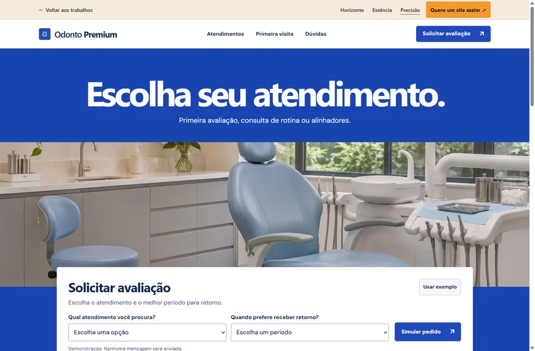

Compare os designs da Odonto Premium e experimente o pedido de avaliação em cada um.
Acolhedora, com atalhos para escolher o atendimento.
Editorial, com o espaço da clínica e a primeira visita em destaque.

Direta, com o pedido de avaliação logo na abertura.